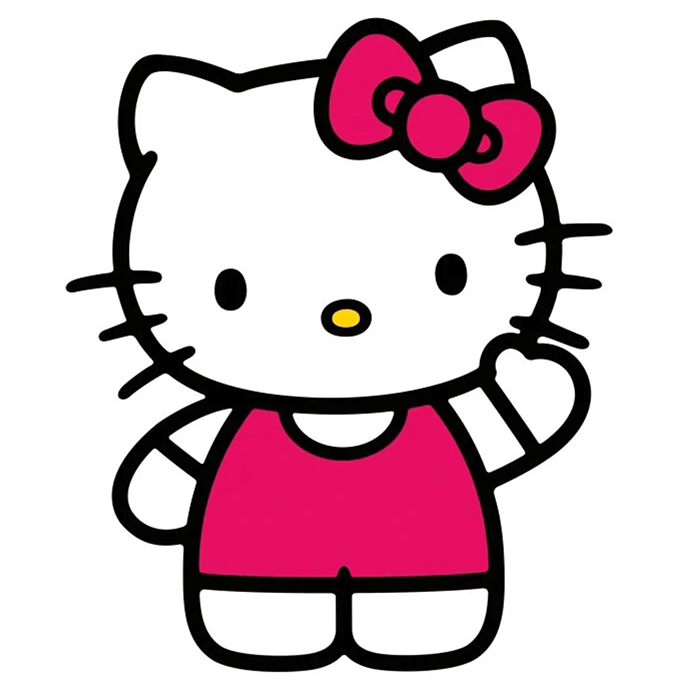
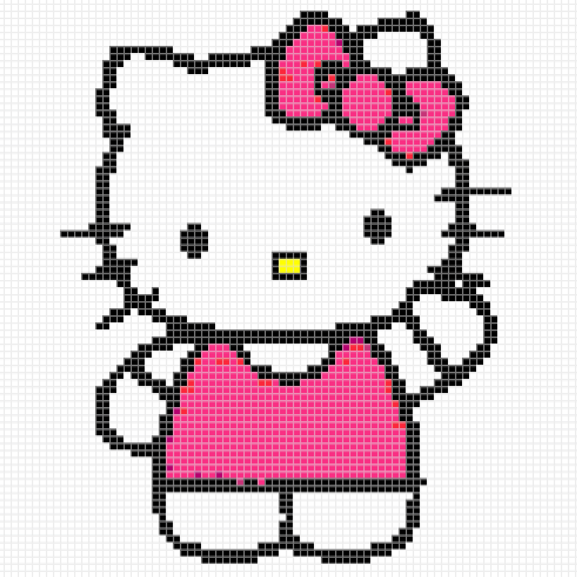

转换前
原图

主体清晰、背景简单的图片，转换效果更稳定。
上传照片即可免费生成拼豆图纸，自动匹配 MARD、COCO、漫漫、盼盼、咪小窝等品牌色号，统计每种颜色的拼豆颗数，并导出可打印的高清图纸。图片仅在当前浏览器处理，无需注册。
小贴士：使用像素图进行转换前，请确保图片的边缘吻合像素格子的边界线，这样可以获得更精确的切割效果和更好的成品。
转换示意
保留主体轮廓和关键配色，自动转换成带网格、品牌色号和用量统计的拼豆图纸。
转换前

主体清晰、背景简单的图片，转换效果更稳定。
转换后

不用安装新 App，拍照或从相册选图，就能生成图纸、匹配店家色号并算好豆豆数量。微信扫一扫，随时把灵感变成拼豆图纸。
微信扫一扫，直接开始
打开拼豆图纸小屋
三步完成
从照片到可打印图纸，全程在当前浏览器内完成。先选一张主体清楚的图片，再根据作品大小调整网格和色板。
选择 JPG 或 PNG 图片。建议先裁掉无关背景，让人物、宠物或主体尽量清晰。
按作品大小设置横向格数，再选择 MARD、COCO、漫漫、盼盼或咪小窝色号。
合并相近颜色、排除杂色或逐格精修，确认颗数后导出可打印的高清图纸。
核心能力
内置 MARD、COCO、漫漫、盼盼、咪小窝等常用拼豆品牌色号。
将图片颜色自动映射到当前色板中最接近的拼豆色号。
按色号统计每种颜色和整张图纸需要的拼豆颗数，方便备料。
可放大图纸逐格修改，也能擦除区域或批量替换同一种颜色。
可导出带色号、网格、坐标和统计的高清 PNG，并可同时导出 CSV 源数据；当前暂不提供 PDF 导出。
尺寸建议
格数越多，细节越丰富，但需要的拼豆和制作时间也会增加。以下范围适合作为首次转换的起点。
品牌色号
MARD 色号覆盖范围较广，适合直接按图纸准备材料；切换到 COCO、漫漫、盼盼或咪小窝后，工具会把同一目标颜色显示为对应品牌色号。不同品牌和批次可能存在轻微实物色差，大作品建议先用实体色卡确认。
使用答疑
免费。图片转换、品牌色号匹配、颗数统计、逐格精修和 PNG / CSV 导出都可以直接使用，无需注册。
不会。JPG、PNG 图片通过浏览器 Canvas 在当前设备中处理，本站不会上传或保存原图。清除浏览器数据时，本地设置和制作进度也会一并清除。
主体清晰、背景简单、光线均匀、轮廓和背景有明显对比的图片效果更好。头像和宠物照片可以先裁剪到主体附近再转换。
可以适当提高颜色合并阈值，使用较小的自定义色板，或在颜色统计中排除少量不需要的颜色；最后再用逐格改色修正关键细节。
先导出高清 PNG，再在系统打印窗口或图片软件中选择“海报”或“平铺”打印，将图片分到多张纸上。导出时保留坐标和分段网格，更方便拼接和核对。
可以。手机浏览器可从相册选择图片、调整参数、查看色号并导出图纸；精修大网格时建议横屏或使用局部放大功能。